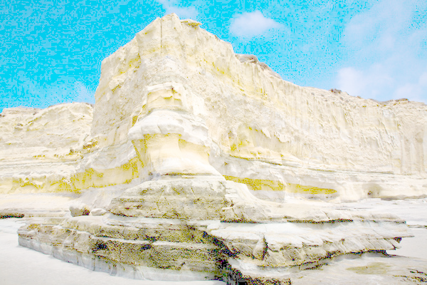

COS426 Assignment 1Image Processing — Batch Mode
Switch to: Interactive Editor
Features Implemented:
- (0.0) Brightness
- (0.5) Contrast
- (0.5) Gamma
- (2.0) Histogram Equalization
- (0.5) Saturation
- (1.5) White Balance
- (2.0) Histogram Matching
- (1.0) Gaussian Filter
- (0.5) Sharpen Filter
- (0.5) Edge Detect Filter
- (2.0) Bilateral Filter
- (0.0) Quantize
- (0.5) Random Dither
- (1.0) Floyd-Steinberg Dither
- (1.0) Ordered Dither
- (1.0) Sampling
- (0.5) Translate
- (0.5) Scale
- (1.5) Rotate
- (1.5) Swirl
- (1.0) Composite
- (3.0) Morph
- (1.0) Art Contest: Battle of the Chris's
Brightness
This feature was implemented by the course staff. I used it as an example of how to loop over the pixels in an image.
Here is an example output where the image is made brighter with the luminance slider set to 0.3:
{kind=link}

Here is an example output where the image is made darker with the luminance slider set to -0.5:
{kind=link}

I did not encounter any particular challenges in implementing this.
Contrast
I implemented Contrast by iterating through all the pixels in the image. Then, for each color channel of the pixel, I applied the contrast change formula to perform the correct interpolation and clamped the value between [0, 1].
Here is the output where the contrast is set to -1.
{kind=link}
Here is the output where the contrast is set to 0.7.
{kind=link}
Here is the output where the contrast is set to -0.8.
{kind=link}

Gamma
I implemented Gamma by iterating through all the pixels in the image. Then, for each color channel of the pixel, I applied the gamma correction formula.
Here is the output where the gamma is set to 1.
{kind=link}

Here is the output where the gamma is set to -1.6.
{kind=link}
Histogram Equalization
I implemented Histogram Equalization by initializing arrays to represent the PDF (probability density function) and CDF (cumulative distribution function) of the number of pixels at each gray level (of which there are 256).
Next, I built the PDF by iterating through all pixels in the image, getting each pixel's luminance value [0, 1] by converting to the HSL color space, and finding the corresponding gray level for that pixel by multiplying that luminance by 255. Then, I incremented the number of pixels in the correct gray level.
After building the PDF, I built the CDF for looping through the PDF and cumulating the values at each index. I looped through the CDF to normalize it.
Finally, I iterated through all pixels in the image once again to adjust each pixel's luminance value. After I converted the pixel to the HSL color space, I mapped the original luminance to the corresponding luminance in the CDF, by using the original value as the index in the CDF. After updating the luminance value, I converted the pixel back to the RGB color space.
Here is the output where the histogram equalization filter is applied to the flower image.
{kind=link}
Here is the output where the histogram equalization filter is applied to the leaves image.
{kind=link}
Saturation
I implemented Saturation by iterating through all the pixels in the image. Then, for each color channel of the pixel, I applied the saturation change formula to perform the correct interpolation and clamped the value between [0, 1].
Here is the output where the saturation is set to 1.
{kind=link}

Here is the output where the histogram equalization filter is set to -0.5.
{kind=link}
White Balance
I implemented White Balance by saving the color of white in the LMS color space. Then, I iterated through all the pixels in the image, saving each pixel also in the LMS color space. For each color channel of the pixel, I divided by the LMS color of white and clamped the value between [0, 1]. Lastly, I converted the pixel back to the RGB color space.
Here is the output where the white balance filter is applied to the town image with a specified white color of (0.5, 0.5, 0.5, 1).
{kind=link}
Histogram Matching
I implemented Histogram Matching by computing the lightness histograms (PDFs and CDFs) of both the original image and reference image in a similar method to that of the Histogram Equalization filter.
Next, for each gray level in the original image, I found the gray level in the reference image such that the difference between each image's CDF value at their chosen gray level is minimized.
Finally, I iterated through all pixels in the original image to map each pixel's original luminance to the new corresponding gray level. This completes the matching of the original image's lightness histogram to that of the reference image.
Here is the output where the histogram matching filter is applied to the leaves image, with the flower image as the reference image..
{kind=link}
Gaussian Filter
NOTE: All the filter operations (Gaussian, Sharpen, Edge Detect, Bilateral) operate on copies of the image to avoid overwriting original pixel values during convolution with the filter kernels.
I implemented Gaussian Filter by pre-computing the 1D Gaussian kernel based on the specified window size, where the weight at each location in the kernel is a function of its distance from the center. The kernel weights were normalized.
Then, I implemented the linear separation optimization of the kernel by first blurring/convolving the original image with the 1D kernel in the vertical direction, then blurring/convolving the resulting image with the 1D kernel in the horizontal direction.
The convolving process was done by iterating through all the pixels in the image, and at each pixel, iterating through all its neighboring pixels (in either the vertical or horizontal direction) within the specified window radius. Each color channel of the pixel was determined by summing the product of the kernel weights and the corresponding neighboring pixel values.
Here is the output where the Gaussian filter is set to 4.
{kind=link}
Here is the output where the Gaussian filter is set to 7.
{kind=link}
Sharpen Filter
I implemented Sharpen Filter by pre-computing the 3x3 sharpen kernel, which is the edge detection kernel with 1 added to the center value. Then, I iterated through all the pixels in the image, and at each pixel, iterated through all its neighboring pixels within the specified window radius. Edge pixels were accounted for by clamping all the neighboring pixels within the width and height of the image. Each color channel of the pixel was determined by summing the product of the kernel weights and the corresponding neighboring pixel values.
Here is the output where the sharpen filter is applied to the leaves image.
{kind=link}
Here is the output where the sharpen filter is applied to the woman image.
{kind=link}

Edge Detect Filter
I implemented Edge Detect Filter by pre-computing the 3x3 edge detection kernel. Then, I iterated through all the pixels in the image, and at each pixel, iterated through all its neighboring pixels within the specified window radius. Edge pixels were accounted for by clamping all the neighboring pixels within the width and height of the image. Each color channel of the pixel was determined by summing the product of the kernel weights and the corresponding neighboring pixel values. Finally, to make the visualization of the edge detection clearer, I inverted each color channel of the pixel.
Here is the output where the edge detect filter is applied to the leaves image.
{kind=link}
Here is the output where the edge detect filter is applied to the woman image.
{kind=link}
Bilateral Filter
I implemented Bilateral Filter by initializing the 2D bilateral kernel based on the specified window size.
Next, I iterated through all the pixels in the image and computed the bilateral kernel at each pixel by iterating through all the neighboring pixels within the specified window radius.
Each weight was based on the neighboring pixel's spatial distance and color distance from the pixel in question.
After computing the bilateral kernel, I iterated through all the neighboring pixels once again to convolve the pixel with the kernel.
Each color channel of the pixel was determined by summing the product of the (normalized) kernel weights and the corresponding neighboring pixel values.
Here is the output where the bilateral filter is applied with a sigmaR of 4 and a sigmaS of 2.
{kind=link}
Here is the output where the bilateral filter is applied with a sigmaR of 5 and a sigmaS of 3.
{kind=link}
Random Dither
I implemented Random Dither by first converting the image to grayscale, then iterating through all the pixels in the image. Then, random noise was generated based on the pixel's grayscale value, and the pixel was quantized to that value and clamped between [0, 1].
Here is the output where the random dither filter is applied to the mesa image.
{kind=link}
Floyd-Steinberg Dither
I implemented Floyd-Steinberg Dither by first converting the image to grayscale, then iterating through all the pixels in the image. Each pixel's neighboring pixels (to right, bottom left, bottom, and bottom right) were saved. Then, for each color channel of the pixel, the pixel value was quantized, and the quantization error (difference between the original pixel value and quantized pixel value) was spread over the four neighboring pixels with the specified weights.
Here is the output where the Floyd-Steinberg dither filter is applied to the mesa image.
{kind=link}
Ordered Dither
I implemented Ordered Dither by first converting the image to grayscale, then pre-computing a 4x4 filter based on the "Bayer 4" pattern (from which the threshold values are derived). Then, I iterated through all the pixels in the image, calculating the quantization error and threshold values at each pixel. For each color channel of the pixel, the pixel value was quantized; that is, it took on its "ceiling" or "floor" value based on the difference between the quantization error and threshold values.
Here is the output where the ordered dither filter is applied to the mesa image.
{kind=link}

Sampling
I implemented Sampling (the utility function which samples an individual pixel) via three sample modes: bilinear, Gaussian, and point.
1. Bilinear sampling defines a pixel's values based on the values of the four closest pixels in the specified image.
To implement bilinear sampling, I clamped the input x- and y-coordinates within the image's width and heights, and saved the x- and y-coordinates of the four closest neighboring pixels.
Then, for each color channel of the pixel, I performed linear interpolations between the neighboring pixels' values.
2. Gaussian sampling defines a pixel's values based on the application of a Gaussian kernel.
To implement Gaussian sampling, I clamped the input x- and y-coordinates within the image's width and heights.
Then, I pre-computed the linearly separable 1D kernel in a similar manner to the Gaussian filter. T
his was applied along the specified pixel's neighboring vertical pixels, then along the specified pixel's neighboring horizontal pixels.
3. Point sampling defines a pixel's values by rounding each x- and y- coordinate to the nearest sample.
Translate
NOTE: All the resampling operations (translate, scale, rotate, morph) operate on new images to avoid overwriting original pixel values during reconstruction of the image.
I implemented Translate by iterating through all the destination pixels in the new image (a copy of the old image) within the limits necessary for the translation.
Then, I looked up each pixel in the source image via a specified resampling technique and set the pixel in the new image equal to the sampled pixel.
The pixel's x- and y-coordinates fed into the sampling function were found by translating each coordinate respectively.
Here is the output where the translate filter is applied using point sampling.
{kind=link}
Here is the output where the translate filter is applied using bilinear sampling.
{kind=link}
Here is the output where the translate filter is applied using gaussian sampling.
{kind=link}
Scale
I implemented Scale by iterating through all the destination pixels in the new image with width and height dimensions specified by the scaling ratio.
Then, I looked up each pixel in the source image via a specified resampling technique and set the pixel in the new image equal to the sampled pixel.
The pixel's x- and y-coordinates fed into the sampling function were found by translating each coordinate with respect to the new image's center, scaling by the specified ratio, and translating in the opposite direction with respect to the source image's center.
Here is the output where the scale filter is applied using point sampling.
{kind=link}
Here is the output where the scale filter is applied using bilinear sampling.
{kind=link}
Here is the output where the scale filter is applied using gaussian sampling.
{kind=link}
Rotate
I implemented Rotate by iterating through all the destination pixels in the new image.
In order to ensure that the full rotated image would be visible, I constructed the new image within a canvas with the dimensions of the length of the image's diagonal.
Then, I looked up each pixel in the source image via a specified resampling technique and set the pixel in the new image equal to the sampled pixel.
The pixel's x- and y-coordinates fed into the sampling function were found by translating each coordinate with respect to the new image's center, rotating by the specified radians, and translating in the opposite direction with respect to the source image's center.
If the coordinates to be sampled were out-of-bounds of the source image, then the corresponding pixel in the new image was set to RGBA(0,0,0,0).
Here is the output where the rotate filter is applied using point sampling.
{kind=link}
Here is the output where the rotate filter is applied using bilinear sampling.
{kind=link}
Here is the output where the rotate filter is applied using gaussian sampling.
{kind=link}
Swirl
I implemented Swirl by iterating through all the destination pixels in the new image (a copy of the old image).
Then, I looked up each pixel in the source image via a specified resampling technique and set the pixel in the new image equal to the sampled pixel.
The pixel's x- and y-coordinates fed into the sampling function were found by translating each coordinate with respect to the new image's center, rotating by a specified theta, and translating in the opposite direction with respect to the source image's center.
The theta value to rotate by linearly increased with respect to the pixel's distance from the center of the image, creating the swirl effect.
Here is the output where the swirl filter is applied to the mesa image.
){kind=link}

Composite
I implemented Composite by iterating through all the pixels in the same-sized images. Then, for each color channel of the pixel in the background image, I performed a linear interpolation between the values of the pixel at that location in the foreground image and background image, using the alpha channel of the foreground image as the blending factor. This achieved the blending effect between the two images.
Here is the output where the composite filter is applied to composite the doge image over the man image.
{kind=link}

Morph
I implemented Morph by morphing two images according to a set of correspondence lines, which were parsed from a specified JSON file.
I first made a copy of the final image in which to construct the morphed picture. The main steps are as follows.
1. Interpolate all line correspondences to create an intermediate image between the initial and final images.
I first made a deep copy of the lines array holding the endpoints of the lines in the initial image in order to store the values for the intermediate line coordinates.
Then, for each line pair, I performed a linear interpolation between the x- and y-coordinates, respectively, of both of the line's endpoints in the initial image and final image, using alpha (the morph time frame) as the blending factor.
2. Warp both the initial and final images to the intermediate correspondence, composed of the intermediate line coordinates that were calculated in the first step.
I called the utility function warpLines() to warp the lines accordingly.
warpLines() essentially iterates through all pixels in the destination image, and then at each pixel, iterates through each line. This is because the x- and y-coordinates of the pixel in the destination image is calculated based on different weights from each line.
Within the iteration of all the lines at each pixel, I called the utility function warpLine() to execute an algorithm to warp a single line.
This involved different linear algebra operations to map X in the destination image to an unknown pixel X' in the source image which contains the current line.
3. Blend the two warped images.
I iterated through all pixels in the copied image. Then, for each color channel of the pixel, I performed a linear interpolation between the values of the pixel at that location in the initial-to-intermediate warped image and final-to-intermediate warped image, using alpha as the blending factor.
Here is the output where the morph filter is applied to two images of Trump.
Art Contest: Battle of the Chris's
For my Art Contest submission, I used the morph filter to create a custom morph between two of the world's favorite Chris's: Chris Eisgruber and Chris Evans.
To achieve this, I first found my two images, cropped them to the same aspect ratio, and ensured that they were the same size.
To be able to properly use them in the GUI, I added these images to the assignment directory in the images folder and added them to the imageNames array in coursejs/guiConfig.js.
In the GUI, I pushed the two images and applied the morph filter. Then, I clicked "MorphLines", specified my correspondence lines in both images, and downloaded the JSON file of such lines.
I added the JSON file to the images folder as well as the morphLinesDropdownOptions array in coursejs/guiConfig.js.
Voila! The GUI now supports pushing both Chris images and applying the morph filter with the correct linesFile, chris.json.
Here is the output where the morph filter is applied to two images of Chris.
{kind=link}
Collaboration
Arnav Kumar
COS 426 Office Hours (Henry Wang)
COS 426 resources (lectures, precepts, Piazza/Ed)
The Internet